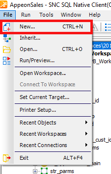
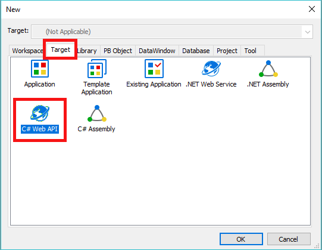
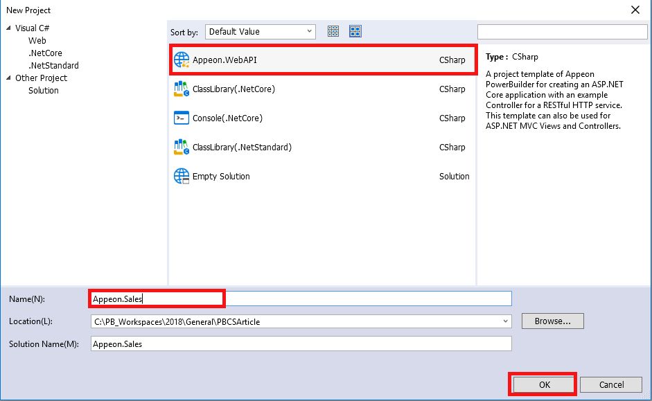
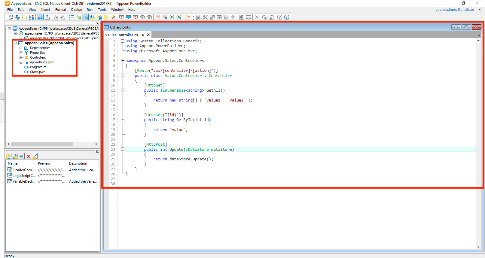

Tutorial
[TOC]
Setting up the essentials
C# DataStore
With the new release of PowerBuilder 2019 comes the introduction of new objects. One of these objects is the C# DataStore! This new objects is very similar to the DataStore from PowerBuilder in a sense that:
- It uses DataObjects from PowerBuilder
- It has the same Properties, Events and Functions
- It is built the same way as PowerBuilder DataObjects (using the DataWindow Designer)
- Your existing DataObjects from PowerBuilder migrate over to C# Core Web API's and Assemblies
Now the great news is that the hand coding of the C# is more of a "port" effort rather than a "rewrite" effort. So creating and using DataStore in C# is also very easy!
In this article we will learn what it is, how to use it, and some of the key benefits of using it in your C# Core projects.
But first we need to know:
What is it?
PowerBuilder 2018 now introduces the new C# DataStore. It is basically the same DataStore from PowerBuilder. It uses your existing DataObjects from PowerBuilder. It has the same Properties, Events and Functions as PowerBuilder. It is built using the DataWindow Designer because the core object is the DataObject; and, you can migrate your existing DataObjects too!
It is a non visual object to be used on your C# Core Web API's and Assemblies. Since it uses the DataObjects from PowerBuilder, there is a dependency on PowerBuilder. But once you have them created/migrated to C# you can develop/edit/publish them from any other C# IDE (ie: PowerBuilder 2018, Appeon C# IDE, VisualStudio, VS Code, etc...)
What are the benefits of using this object?
First of all, you can easily migrate your existing business logic to the cloud! (In this Article I will guide you, step by step, on how to do it and also how to publish them to IIS!) Another key benefit of using the C# DataStore is an increased performance of your code! Plus, developing the C# DataStore is very similar to PowerBuilder's DataStore. So the hand coding of the C# is more of a "port" effort rather than a "rewrite" effort. Amongst others...
How to use it?
So... on to the interesting part of this Article: Let's start by setting up the essentials for our project!
Creating a C# Web API Target
1. Add a new C# Non-Visual Business Target
First of all, we need to start by creating a new C# Non-Visual Business Target. In this Article, we will be creating a C# Core Web API to then publish its services to IIS. To do that, we will first need to open PowerBuilder. Then right-click on the menu option: File>New

2. Create a C# Web API
Then we need to select the "Target" tabpage to then click on "C# Web API" and "OK".

3. Create the C# Project
Then we need to select the type of C# Project we want to create, along with its name. Then click "OK".

You will notice that we now have a new C# Target added along with some basic objects for our Web API. You'll also notice that there is a new C# Editor added to the PowerBuilder IDE.

We have now successfuly created our C# Web API! In the next section we will learn how to Migrate Existing DataWindows...
Migrating Existing DataWindows
1. Selecting the DataWindows to migrate
We will now migrate our existing DataObjects over to C#. To do that, we need to select the library where our DataObjects reside. Then right-click on it and select "Generate C# Models".

2. Connecting to the DataBase
This will bring up a new window. This window will ask us to what database we want to connect. We can modify said settings there. After we're done, we click "OK".

3. DataWindow/Model properties for migration
We will now be presented with the DataWindow Import Tool. This tool will enable us to set the necessary parameters for the import of the DataObjects. We will take a quick look at this tool because an advanced tutorial will be also done covering this tool more in depth. But for now, let's take a look at it's components...

Following is a brief description of what each component is used for:
Filtering Tools: It is used to search and filter out the list of DataObjects we will be working with.
Import/Export: These two buttons allow us to Import and/or Export the DataObjects into this list.
Select Libraries: This button will show us into which C# Project libraries the Exported Objects will be saved to.
Global Options: This button will open up another window that will give us the Global Options for the Model Export.
Model Export: This button will do the Export of the selected Models. This is the button that we will use after setting up all the necessary setting for our Models.
DataObjects: On the image above, this is the list of the DataObjects, from PowerBuilder, that we will be migrating.
Model Names: This is the list of matching Model Names our DataObjects will migrate to.
Model Preview: This button is used per each DataObject/Model match. It will give us a preview window of the Exported Model.
DataWindow Syntax: This button will show us a preview of the source code of our DataObject.
Open DataObject: This button will open the DataObject in the DataWindow Designer from PowerBuilder.
4. Export Models
Now, since we don't need to make any changes to our DataObjects, we can just click on "Model Export". This will bring a popup window. This window will give us some more details before we finish the migration.
Since everything is ready for our example, we can go ahead and click "Export".


As you can see, our DataObjects have been migrated! Now please take a note that the objects that end on ".cs" are C# objects while the ones that end on ".srd" are PowerBuilder's DataObjects. So this is how your C# DataStores are bound to your PowerBuilder DataObjects. That is, because the models depend on the DataObjects from PowerBuilder.

- To be continued...
Creating the Interface/Service
text text text
Creating the Controller
text text text